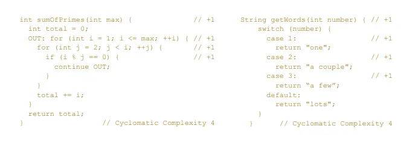
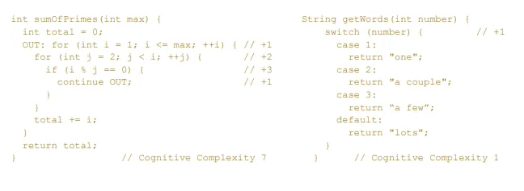

1. 为什么代码质量很重要?
生成高质量的代码最终会提高最终用户的体验。专注于创建高质量的代码还可以帮助使用者了解他们正在使用的软件或程序的安全性和可靠性。
编写正常运行的高质量代码至关重要。当开发人员编写低质量的代码时，可能会产生漏洞和缺陷，从而使软件面临网络安全威胁，影响软件使用和业务进行，并影响软件的可靠性。
增强代码可读性：代码可读性很重要，这可以提高其他开发人员对代码的理解率。易于阅读的代码也易于改进。
提高程序可持续性水平：程序可持续性衡量代码在最小更改下存活更长时间。高质量的代码可以持续运行多年。
提高可转移性：将代码从一个平台传输到另一个平台过程很复杂，对于开发人员来说，传输高质量的代码要容易得多，因为他们只需要进行尽可能少的更改。
降低与程序或软件相关的成本：当软件持续很长时间而几乎没有问题时，可以为公司节省成本。公司无需花费额外的时间来重写低质量的代码。
提高代码安全性：在编写代码时，每千行代码就可能会引入4到6个缺陷，通过编写高质量代码遵循编码规范，可以提高代码安全性，减少代码中的缺陷或漏洞，从而提高软件安全性。
2. 优秀代码的特质：CLEAN
Cohesive: 高内聚的代码更容易理解和查找bug
Loosely Coupled: 松耦合的代码让实体之间的副作用更少，更容易测试、复用、扩展
Encapsulated: 封装良好的代码有助于管理复杂度，也更容易修改
Assertive: 自主的代码其行为和其所依赖的数据放在一起，不与其它代码互相干预(Tell but not Ask)
Nonredundant: 无冗余的代码意味着可以只在一个地方修复bug和进行更改
3. 软件工程中的破窗效应
破窗效应是社会学 （犯罪学）的词语，语义如下:
“一个房子如果窗户破了，没有人去修补，隔不久，其它的窗户也会莫名其妙地被人打破; 一面墙，如果出现一些涂鸦没有被清洗掉，很快 的，墙上就布满了乱七八糟、不堪入目的东西;一个很干净的地方，人们不好意思丢垃圾，但是一旦地上有垃圾出现之后，人就会毫不犹疑地抛，丝毫不觉羞愧。”
![企业环境管理工具——破窗效应(Broken windows theory)_云杉思库-商业新知]()
引申到软件工程中: 当团队成员观察到代码库中存在质量不高的代码时，他们对自己的代码质量标准也可能相应降低。
比如
原来的代码连续写了好几个if, 当后续新功能增加时也是累加if判断, 而不是抽取使用设计模式或者map映射
方法长度不断增长
类的方法数, 成员变量数不断累加
相似代码不断粘贴复制
破窗效应在软件开发中的体现可以分为以下几个方面：
代码质量的连锁反应：一旦代码库中出现了质量不高的代码，其他开发者可能会认为低质量代码是可以接受的，从而导致新写的代码也存在类似问题。
技术债务的累积：破窗效应不仅仅是代码质量下降的问题，它还可能导致技术债务的快速增加，长期来看将严重影响项目的可维护性和扩展性。
团队士气和标准的下降：当看到低质量代码被接受时，团队成员的士气可能会受到影响。他们可能会觉得追求代码质量的努力是没有回报的。
4. 代码质量的度量：技术债
概念
开发人员为了加速软件开发，在应该采用最佳方案时进行了妥协，改用了短期内能加速软件开发的方案，从而在未来给自己带来的额外开发负担。
本金
修复代码质量问题所需人力资源估值(人天、人月等)
年利息
代码质量问题每年造成损失的估值
负债率
偿还债务所需资源 / 重写所有代码的预估资源
如果负债率超过 100% , 意味着代码已经破产,
在开发过程中, 当改动屎山代码时,会觉得改不动了, 还不如重新写一份来得快, 此时基本标志代码已经破产
5. 代码质量衡量指标
SQALE(Software Quality Assessment based on Lifecycle Expectations)方法整合了ISO-25010标准与代码规范，其目标是：以客观、准确、可复制和自动化的方式为评估软件应用程序的源代码提供支持；为管理技术债务提供一种有效的方法。SQALE是目前众多主流代码分析工具的参照标准，包括我们熟知的SonarQube，和CoderGears, SQUORE等商用代码扫描分析工具。
5.1 代码可维护性规则列表
| 类型 | 扫描规则 |
|---|---|
| 可测性 | 1. 函数不能太复杂 2. 函数不能有太多参数 3. 表达式不能太复杂 |
| 可变更性 | 源文件不能有重复代码块 控制流"if",“for”,“while”,“switch”,“try"等不能嵌套太深 类不能与其他的类耦合（单一职责） 类不能有太多方法 类不能有太多域 不能使用魔数 “switch"不能有太多的"case” |
| 可读性 | 函数不能有太多行 代码不应被注释掉 注释不能放在代码行的行末 |
6. EPC代码质量管理指标
6.1 圈复杂度
定义
圈复杂度是用来衡量一个模块判定结构的复杂程度，数量上表现为线性无关的路径条数，即合理的预防错误所需测试的最少路径条数。圈复杂度大说明程序代码可能质量低且难于测试和维护，根据经验，程序的可能错误和高的圈复杂度有着很大关系。
举例 如果一段源码中不包含控制流语句（条件或决策点），那么这段代码的圈复杂度为1，因为这段代码中只有一条路径；如果一段代码中仅包含一个f语句，且f语句仅有一个条件，那么这段代码的圈复杂度为2；包含两个嵌套的f语句，或是一个f语句有两个 条件的代码块的圈复杂度为3。
6.2 圈复杂度千行平均超标数
定义 代码仓库主干上的某一个revision的所有代码，去除所有自动化测试代码后，通过工具对函数圈复杂度扫描之后，计算出所有超出阈值的函数圈复杂度总和。
圈复杂度千行平均超标数 = 超阈值函数圈复杂度总和 / 该语言本次被扫描的生产代码总行数 * 1000
说明： 1, 第三方生产的代码，或者由工具自动生成的非人工代码不计入到代码行数和圈复杂度数据当中。 2, 代码仓库中包含的第三方代码和工具生成的代码应该在研发部登记，以便核查。
6.3 函数长度
定义 一个函数中，去除空行及注释后的代码行数。
阈值及统计方式
指定阈值(根据EPC代码质量维度中不同级别的要求)
计算方式与前面阈值统计计算的方法。
6.4 文件长度
定义 一个文件中，去除空行及注释后的行数。
阈值及统计方式
指定阈值(根据EPC代码质量维度中不同级别的要求)
计算方式与前面阈值统计计算的方法。
6.5 函数缩进深度
定义 举例说明深度的定义。下面的函数中，缩进深度是3.
public void calculate(int count,boolean isInChina){
for(int i =0;i<count;i++){ // 1
if(isInChina){ // 2
tax+=price*5%; // 3
}
}
}
6.6 函数入参数量
定义 一个函数声明中所接受的传入参数个数。
6.7 对象耦合度
定义 在面向对象语言中，此规则计算对象中唯一属性、局部变量和返回类型的数量。高于指定阈值的数字表示耦合度较高。
7. 圈复杂度 VS 认知复杂度
圈复杂度它指的是独立的执行路径，
认知复杂度则是说人脑去理解它的复杂程度。
圈复杂度对比:
两段代码的圈复杂度都是4
认知复杂度
左边代码认知复杂度为7 , 右边代码认知复杂度为1
8. 技术债从何来?
8.1 对象函数的问题
过长函数
过长参数列表
基本类型偏执
表现为不愿意在小的问题域上运用对象
例如, 一个订单类中目前只有商品名称字段, 坏味道的代码就是直接把商品名称字段写订单类中, 而不是引入一个商品类, 当后续需要增加商品价格/商品分类时 可能会继续累加字段
重复的switch/if
循环语句
表现为: 多层嵌套或者认知复杂度高的循环类代码
可以用jdk8的lambda和map等手段降低认知复杂度
8.2 对象数据的问题
神秘命名
命名不规范或者命名单词错误等
全局数据
使用全局变量, 并在代码中修改其值
这会加大代码的理解程度, 稍有不注意, 就会在哪个犄角旮旯修改了, 造成幽灵式bug
优化: 减少可变的全局变量; 写操作次数和场景尽可能的少
可变数据
对数据的随意修改经常会导致出乎意料的结果和难以发现的bug
比如类的成员变量应该只有一种修改入口, setXXX(), 而不能直接修改成员变量, 引申到其他变量也一样, 变量的修改入口只有一种,不能有各种方式都能修复
数据泥团
指不同类拥有大部分相同的成员变量,
比如: 订单类 和商品类 都有 id/创建时间/修改时间/创建人 等
此时应该考虑抽离公共基础类, 使业务类继承它, 若有相同的业务字段也应该类似处理
临时字段
表现为 一个临时字段但拥有较大的作用范围,
例如, 一个方法内的变量, 但设置成全局变量, 或者设置成上游函数的变量(再传递到当前函数)
应当让变量的作用域尽可能的小
纯数据类
意思是, 只有数据没有行为
java中的pojo类都属于这种情况, 在java中有大量的
DAO/DTO/VO这样的后缀类, 类中一般只有成员变量, get/set, 而且没有对这个类具体的业务操作但这种刚好属于例外情况: 纯数据记录对象被用作函数调用的返回结果
8.3 对象关系的问题
过长的消息链
中间人
A类对B类进行封装, 使B隐藏起来, 但 A类中都是直接调用了B类, 此时A类这个中间人就是多余的
内幕交易
通常指的是类或模块之间过度依赖内部实现细节，而不是通过公开的接口进行交互
比如 A类中直接处理了B类的数据, 而不是调用B类方法来处理
class Order { private List<Item> items; public List<Item> getItems() { return items; } } class OrderProcessor { public void processOrder(Order order) { List<Item> items = order.getItems(); for (Item item : items) { // 直接访问 Item 的内部数据 if (item.getPrice() > 100) { System.out.println("Expensive item: " + item.getName()); } } } } // OrderProcessor 类的processOrder方法直接处理了 Order类的Item类的字段, 当别人调用processOrder方法时被认为存在内幕交易(明明只处理order, 但连order里字段也处理了, 而且处理位置在OrderProcessor ) // 改进: 将对item变量的处理逻辑放在Order类中被拒绝的馈赠
子类仅仅使用父类中的部分方法和属性。其他来自父类的馈赠成为了累赘。
可以 以委托取代继承来达到目的。
发散式变化：一个类因为多个原因被修改，类的功能过多
霰弹式修改：增加/修改一个功能，需要修改多个类
依恋情结：某个函数为了计算某值，从另一个对象那儿调用了大量的取值函数
夸夸其谈通用性：遵循合适原则，不用为未来的无限的可能情况做设计
8.4 其他问题
重复代码
冗赘的元素
过大的类
异曲同工的类
注释
9. 还债的技术
9.1 重构
9.1.1 实现逻辑重构
遵循代码规范
解决代码静态分析工具扫描出的问题
消灭code smell
9.1.2 设计重构
抽象规则
封装规则
模块化原则
层次结构原则
9.1.3 架构重构
9.2 单元测试
单测的好处
提升质量信心
保护开发自己
如何写单测
junit , spock等单测框架
9.3 Code Review
CR的好处
建立CR的机制
10. 技术债管理
10.1 战略战术
定战略
切记一刀切
根据业务发展阶段可以分为 探索阶段/ 上升阶段 / 稳定阶段 / 下沉阶段,
它们分别的管理方案: 预防技术债 / 治理 / 控制 / 放任
定战术
平衡业务和债务的关系
10.2 工具流程
codeDog && CodeCC
质量红线
10.3 打造学习型组织
工程素养提升
设计模式：掌握24种设计模式
设计原则：掌握SOLID原则(单一职责、开闭原则、里氏替换、接口隔离、依赖反转)
方法学：了解Devops,极限编程，Scrum,精益，看板，瀑布，结构化分析，结构化设计
实践：实践测试驱动开发，面向对象设计，结构化编程，函数式编程，持续集成，结对编程
工程文化培养
为什么代码质量很重要?代码质量是指软件代码的编写和可维护程度。它包括可读性、效率、可扩展性、可靠性、可维护性和安全性等因 - 掘金
软件开发中的破窗效应分析破窗效应，这一起源于城市犯罪学的理论，已经逐渐被应用于多个领域，包括软件开发。在软件开发的环境中 - 掘金